Data Structures and Algorithms
with Object-Oriented Design Patterns in C++
Data Structures and Algorithms
with Object-Oriented Design Patterns in C++
A number of divide-and-conquer algorithms are presented
in the preceding sections.
Because these algorithms have a similar form,
the recurrences which give the running times of the algorithms
are also similar in form.
Table  summarizes the running times
of Programs , and .
summarizes the running times
of Programs , and .
| program | recurrence | solution |
| Program | T(n)=T(n/2)+O(1) | |
|
Program | T(n)=2T(n/2)+O(1) | O(n) |
|
Program | T(n)=2T(n/2)+O(n) | |
In this section we develop a general recurrence
that characterizes the running times of many divide-and-conquer algorithms.
Consider the form of a divide-and-conquer algorithm to solve a given problem.
Let n be a measure of the size of the problem.
Since the divide-and-conquer paradigm is essentially recursive,
there must be a base case.
I.e., there must be some value of n, say  ,
for which the solution to the problem is computed directly.
We assume that the worst-case running time for the base case
is bounded by a constant.
,
for which the solution to the problem is computed directly.
We assume that the worst-case running time for the base case
is bounded by a constant.
To solve an arbitrarily large problem using divide-and-conquer,
the problem is divided into a number smaller problems,
each of which is solved independently.
Let a be the number of smaller problems to be solved
(  ,
,  ).
The size of each of these problems is some fraction of
the original problem,
typically either 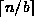 or 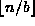
( 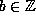, 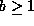).
).
The size of each of these problems is some fraction of
the original problem,
typically either 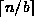 or 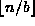
( 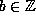, 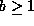).
The solution to the original problem is constructed
from the solutions to the smaller problems.
The running time required to do this depends on the problem to be solved.
In this section we consider polynomial running times.
I.e.,  for some integer
for some integer  .
.
For the assumptions stated above, the running time of a divide-and-conquer algorithm is given by
In order to make it easier to find the solution to Equation ,
we drop the  s as well as the
s as well as the  from the recurrence.
We can also assume (without loss of generality) that
from the recurrence.
We can also assume (without loss of generality) that  .
As a result, the recurrence becomes
.
As a result, the recurrence becomes
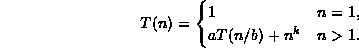
Finally, we assume that n is a power of b.
I.e.,  for some integer 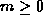.
Consequently, the recurrence formula becomes
for some integer 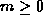.
Consequently, the recurrence formula becomes
We solve Equation as follows.
Divide both sizes of the recurrence by
and then telescope :
Adding Equation through Equation ,
substituting T(1)=1
and multiplying both sides by gives
In order to evaluate the summation in Equation
we must consider three cases:
 Copyright © 1997 by Bruno R. Preiss, P.Eng. All rights reserved.
Copyright © 1997 by Bruno R. Preiss, P.Eng. All rights reserved.